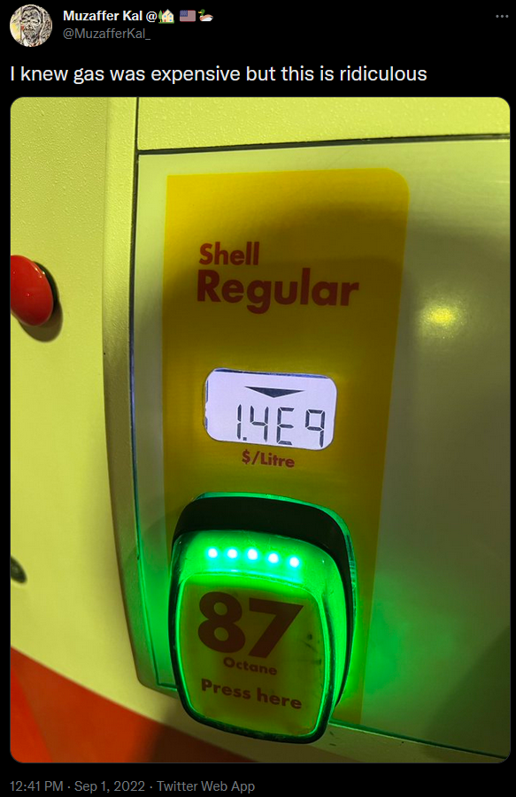

Example: Spam Filtering
In 2002, Paul Graham used Bayes’ Rule as part of his algorithms to greatly decrease false positive rates of unwanted e-mails (“spam”). Let \(H^{c}\) be the event that an e-mail is “spam”. Let \(W\) be the event that an e-mail contains a trigger word such as “watches”. Suppose that
- the probability that an e-mail contains that word given that it is spam is 17%
- the probability that an e-mail contains that word given that it is not spam is 9%
- the probability that a randomly selected e-mail message is spam is 80%
Find the probability that an e-mail message is spam, given that the trigger word appears.
Example: Quality Control
A manufacturing process produces integrated circuit chips. Over the long run the fraction of bad chips produced by the process is around 20%. Thoroughly testing a chip to determine whether it is good or bad is rather expensive, so a cheap test is tried. All good chips will pass the cheap test, but so will 10% of the bad chips. Given that a chip passes the test, what is the probability that the chip was defective?
Example: Monty Hall Problem

Monty Hall asks you to choose one of three doors. One of the doors hides a prize and the other two doors have no prize. You state out loud which door you pick, but you don’t open it right away.
“Monty opens one of the other two doors, and there is no prize behind it.“At this moment, there are two closed doors, one of which you picked. The prize is behind one of the closed doors, but you don’t know which one. Monty asks you, ‘Do you want to switch doors?’”
- switch doors
- do not switch doors
Example: DUI Checkpoint
A breath analyzer, used by the police to test whether drivers exceed the legal limit set for the blood alcohol percentage while driving, is known to satisfy
\[P(A|B) = P(A^{c}|B^{c}) = x\]
where \(A\) is the event “breath analyzer indicates that legal limit is exceeded” and \(B\) “driver’s blood alcohol percentage exceeds legal limit.” On Saturday nights, about 4% of the drivers are known to exceed the limit.
- Describe in words the meaning of \(P(B|A)\)
- Determine \(P(B|A)\) if \(x = 0.90\)
- How big should \(x\) be so that \(P(B|A) \geq 0.95\)?
Example: Disease Outbreak
Suppose that at UC Merced, there is a two percent chance that a freshman has herpes at the end of the school year. Let \(H\) be the event of having the virus, while \(C\) represents the event that the freshman is from the Cathedral dorm. Among the herpes carriers, the probably of being a Cathedral resident is 32%. Among those free of disease, the probably of being a Cathedral resident is 13%. What is the probability that a freshman has herpes, given that you know that he or she lived in the Cathedral dorm?
Generalized Bayes’ Rule
If we are conditioning \(B\) on an event \(A\), where the latter can be partitioned into several subsets,
\[A = \{ A_{1}, A_{2}, ..., A_{j} \}\]
then the total probability is
\[P(B) = P(B|A_{1}) \cdot P(A_{1}) + P(B|A_{2}) \cdot P(A_{2}) + ... + P(B|A_{n}) \cdot P(A_{n})\]
and Bayes Rule for computing the probability of \(A_{i}\) given \(B\) becomes
\[P(A_{i}|B) = \displaystyle\frac{ P(B|A_{i}) \cdot P(A_{i}) }{ P(B|A_{1}) \cdot P(A_{1}) + P(B|A_{2}) \cdot P(A_{2}) + ... + P(B|A_{n}) \cdot P(A_{n}) }\]
Bayesian Odds
The Bayesian odds of event \(A\) to event \(B\) given that event \(C\) has already taken place is
\[\displaystyle\frac{ P(A|C) }{ P(B|C) }\]
Looking Ahead
due Fri., Sept. 9:
- WHW2
- LHW2
- Perceptions of Probability (survey)
Be mindful of before-lecture quizzes
No discussions this week for Math 32 (Sept. 5-7)
Exam 1 will be on Tues., Sept. 27
